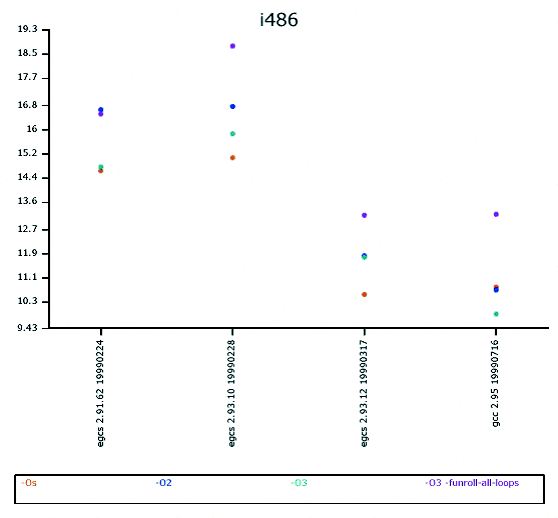

| Securing and Optimizing Linux: RedHat Edition -A Hands on Guide | ||
|---|---|---|
| Prev | Chapter 6. Linux General Optimization | Next |
For a i486 CPU with compiler version egcs-2.91.66, the best optimization options would be:
CFLAGS=-O3 -funroll-all-loops -malign-double -mcpu=i486 -march=i486 -fomit-frame-pointer -fno-exceptions
|

Comparitive analysis chart with the above mentioned flags